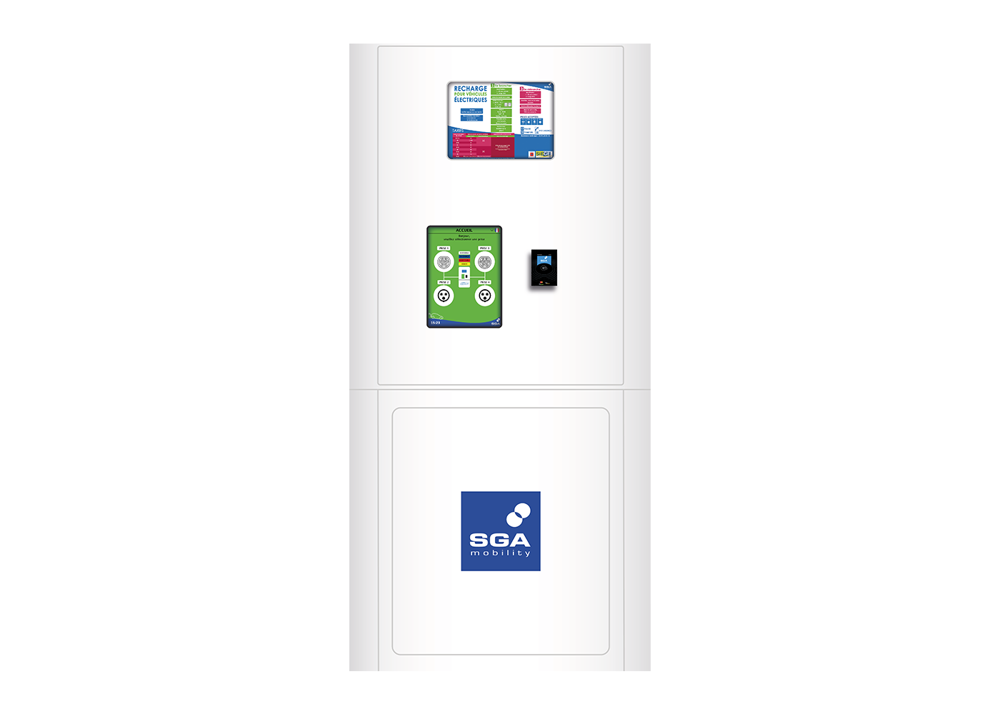
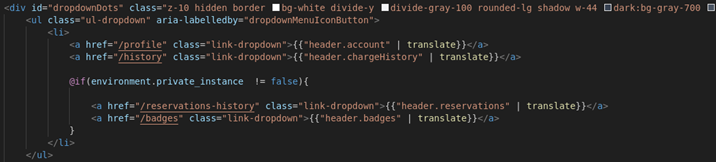

Mon Stage chez SGA Mobility
Stage du 15 Janvier au 27 Février 2024
Stage du 15 Janvier au 27 Février 2024
SGA INDUSTRIES, fondée le 4 octobre 1999, est spécialisée dans la fabrication de bornes de recharge. Avec une expérience de 23 ans, elle s'impose comme un acteur majeur dans la région Normande grâce à son engagement envers l'innovation et la qualité.
Durant mon stage au sein du secteur informatique de SGA INDUSTRIES, je me suis intégré à l'équipe en pleine phase de clôture d'un sprint, suivant la méthodologie AGILE. Cette expérience m'a permis de participer activement à des réunions bi-hebdomadaires cruciales pour le suivi et l'ajustement des objectifs du projet.
L'environnement de développement était basé sur Debian, avec Visual Studio Code et Figma comme outils principaux. Le développement reposait sur HTML, CSS, et TypeScript, en utilisant Angular et Tailwind CSS pour créer une interface responsive et dynamique, le tout versionné avec Git.
La première mission consistait à rendre la fonction de réservation du site plus attrayante et accessible sur différents appareils, en utilisant HTML, CSS, TypeScript et le framework Angular.
Ma deuxième mission consistait à n'afficher certaines options que si la variable d'environnement, qui enregistre le 'niveau' de l'utilisateur (utilisateur simple ou développeur), le permettait. En effet, grâce à ce petit filtre, des options utiles aux développeurs pouvaient être cachées aux yeux des utilisateurs.
La troisième mission enrichissait les fonctionnalités du site par l'ajout d'un filtre et d'une liste de favoris, assurant une expérience utilisateur optimale sur tous les supports.
La mission ajoutait des conditions d'affichage spécifiques aux comptes Utilisateurs et Développeurs, pour personnaliser l'expérience utilisateur selon le type de compte.
Mon stage chez SGA INDUSTRIES a été une expérience enrichissante, m'offrant une perspective concrète sur la gestion de projets informatiques et le travail en équipe. J'ai acquis des compétences techniques précieuses et développé des aptitudes professionnelles essentielles pour ma future carrière.